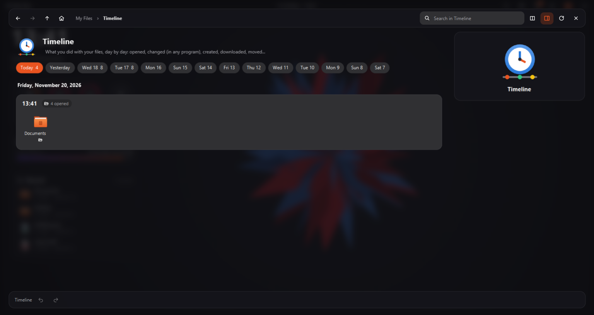
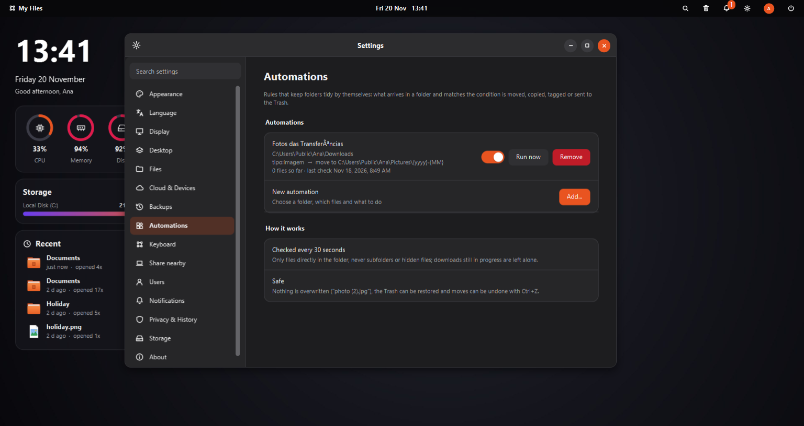

Tags, timeline and automations
Tags#
Tags are coloured labels you put on files and folders, for example Work, Urgent or Personal.
- Right-click › Tags shows the existing tags and New tag…. You can tag many items at once.
- Tagged items show coloured dots on their icons, and the tags appear in the details panel.
- Each tag is a place in My Files that lists everything with that tag.
tag:Workworks in the search and in smart collections.
Tags are kept by FileExp, so they work on any file system and any drive. They follow the files when FileExp renames or moves them, including the moves made by Undo, the split view and automations.
Timeline#
The Timeline (My Files › Folders › Timeline) is a diary of your work with files, day by day.

It records when files were opened, changed in any program, created, renamed, moved, copied, downloaded, uploaded to the cloud, backed up, handled by automations, received from a nearby computer and put in the vault.
- Events are grouped in work sessions: a pause of more than 45 minutes starts a new session. Each session shows a summary by kind and its files.
- Click to show the file in its folder; double-click to open it. Files that no longer exist appear faded.
- The last 5 000 events are kept.
- Settings › Privacy & History turns the activity history off and clears it.
Files changed by other programs (for example a document saved in your word processor) come from the home index, so they appear even when FileExp was not used to open them.
Automations#
Automations are rules that tidy folders for you. Open Settings › Automations.

A rule has:
| Part | Example |
|---|---|
| Folder to watch | Downloads |
| Condition | Any search words: type:image, *.pdf, size>100mb… |
| Minimum age (optional) | Only files older than 30 days |
| Action | Move to, Copy to, Move to Trash or Add a tag |
| Destination | Pictures/{yyyy}-{MM} — the date parts are replaced by the date of the file ({dd}, {type} and {ext} also work) |
Ready-made examples: photos and documents from Downloads, old installers to the Trash, sort Downloads by type.
How they run#
- Every 30 seconds, only on the files directly in the folder — never subfolders or hidden files.
- Downloads in progress are skipped (
.part,.crdownload, and files changed a few seconds ago). - Nothing is overwritten: an existing name becomes "photo (2).jpg".
- Moves can be undone with Ctrl+Z, and the notification has an Undo button.
- Everything an automation does appears in the timeline.
Sharing collections and rules (since 3.11)#
A smart collection or an automation rule can go to another computer, or to another person, in a small file with the FileExp icon:
| File | Holds | To export |
|---|---|---|
.fexc | A smart collection (the search and the folder it looks in) | In My Files, right-click the collection tile (or the background, inside it) › Export collection... |
.fexr | An automation rule (folder, condition, action, target, minimum age) | Settings › Automations › Export... on the row of the rule |
- Choose the folder; FileExp writes
<name>.fexcor<name>.fexrand never replaces a file that already exists. - Opening the file (double click in the system, or in My Files) shows what it holds before adding it: the name, the FileExp version that made it and the date, the search or the rule and the folders. A folder that does not exist on this computer is shown in red, "Not on this computer"; it is added anyway and works when the folder exists.
- Paths inside the home folder follow the user (
C:\Users\Ana\VideosbecomesC:\Users\Rui\Videos). A name that already exists gets another one ("Big videos (2)"). - A rule arrives off when it sends files to the Trash, when one of its folders is missing or when it was off; the Turn the rule on now box decides.
- The notification has Undo, which removes exactly what was added.
- A file that is not a FileExp file, of the wrong kind or made by a newer FileExp is refused with a clear message.